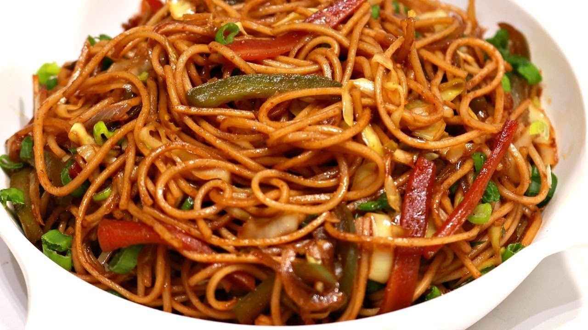

Chowmein Recipe

Chowmein very Tasty and very soft Yummy spices
Ingredients of Chicken Chowmein
- 180 grams egg noodles
- 100 grams egg
- 4 cloves shredded garlic
- 1/2 inch shredded ginger
- 1 medium finely chabbage
- 1 cup chopped carrot
- 1 cup chopped white cabbage
- 1 capsicum (green pepper)
- 1/2 tablespoon light soya sauce
- 1 teaspoon suger
- 1 teaspoon grouund red peppers
- 3 tablespoon Refined oil
- 1 teaspoon salt
How to make chicken chowmein
- One cooked, drain the noodles. Add 1 tablespoon of oil into the noodles and toss property, this will
avoid the noodles from sticking to each other.
- Take a large pan, add 7-8 cups of water and bring to boil. put the egg noodles in and cook for 5 minutes
or so.
- Next put in the finely sliced vegetables, carrot pepper cabbage, onion and fry for 2-3 minutes.
- Shift the chicken onto a bowl or a plate and keep aside.
- Fry this chowmein for another 2-3 minutes before switching off the heat.
- Serve piping hot with ketchup on the side.